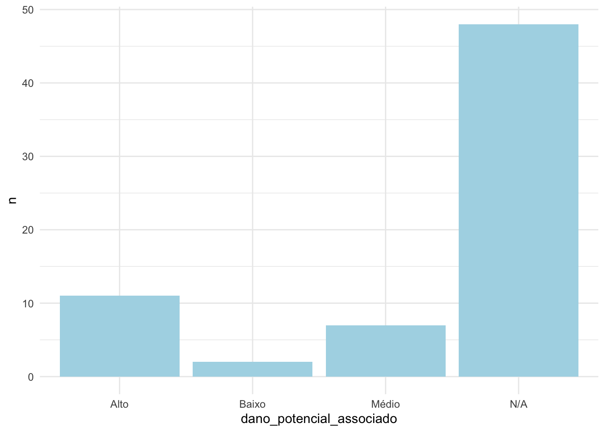

Introdução ao purrr
Introdução ao purrr
Página inicial
Pré-requisitos
Slides
Links extras
Nesta página
Barragens cadastradas
Barragens segundo DPA
Barragens de mineração em SP
Autor
Bea
Data de Publicação
29 de abril de 2023
A UF SP apresenta 68 barragens de mineração cadastradas no SIGBM.
Barragens cadastradas
Barragens segundo DPA
